A person leads, AI inside
There's a correct answer, but only I know the rules
- Expense claims for out-of-pocket business expenditure
There's a correct answer, but only I know the rules
Many good versions: AI drafts, I pick
Rule-based and fully automated
Judgment and consequences: I own it
Checks each staff expense claim against the company expense policy (category limit, 30-day deadline, receipt rule) and emails the result to the line manager.
A new claim submitted on the Staff Expense Claim Google Form, which adds a new row in the response sheet.
Approve or reject a claim, or email an employee. The Zap's only action is Gmail Send Email, and its "To" field is fixed to my own address, so every result goes to the manager first.
The line manager reads each pre-check email within 2 working days. They check the receipt and the business purpose, then record the decision in the Manager sign-off column.
I submitted three claims through the form and checked each pre-check email against its sheet row and its entry in Zap history. One passed, one was over the category limit, and one was submitted 67 days after the expense. Every result matched the policy when I checked it by hand.
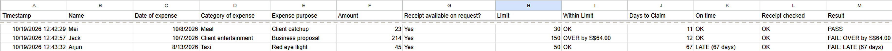
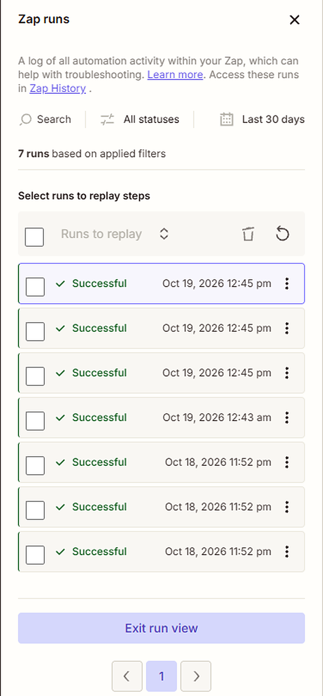
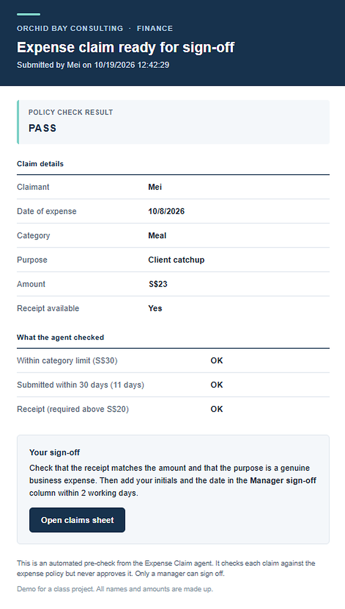
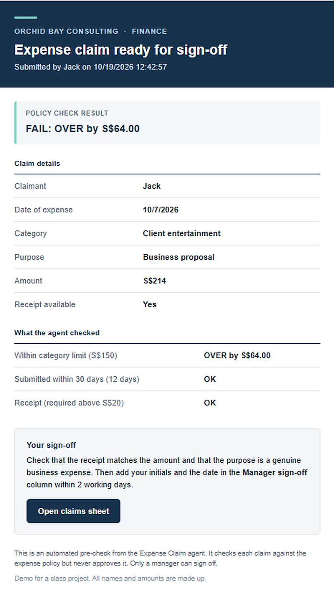
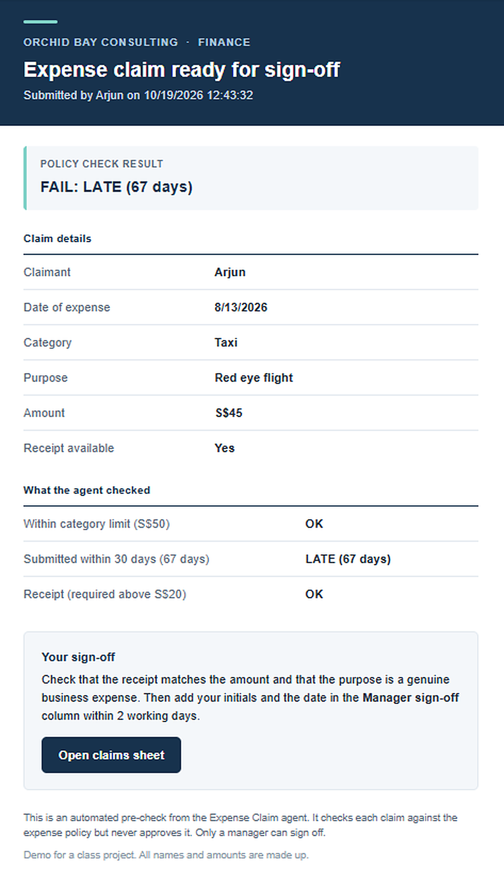
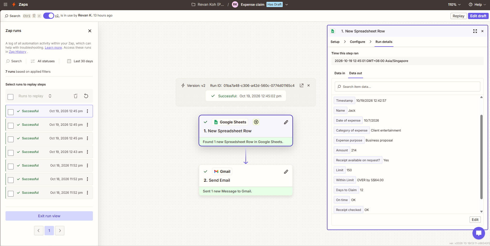
My first attempt ("Tricky test 2") went in while the Zap was switched off, so no email was sent. I put the old formula back and resubmitted the future-dated claim as "Tricky case test 2" with the Zap on to capture the run.
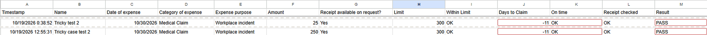
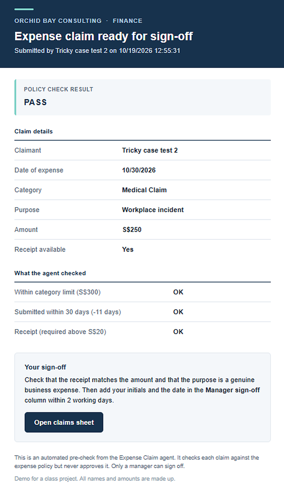
I turned the Zap off, added a future-date check to the On time formula (K1), turned the Zap back on, then submitted the same claim again as "Trick case solution". It now fails with FUTURE DATE.
={"On time"; ARRAYFORMULA(IF(B2:B="",, IF(J2:J<=30, "OK", "LATE ("&J2:J&" days)")))}={"On time"; ARRAYFORMULA(IF(B2:B="",, IF(J2:J<0, "FUTURE DATE", IF(J2:J<=30, "OK", "LATE ("&J2:J&" days)"))))}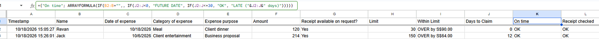
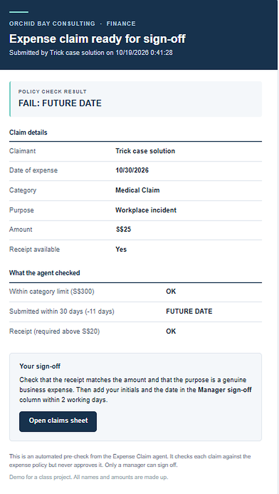
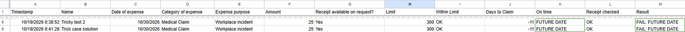
Name your agent's quadrant by its exact title on the map above: A person leads, AI inside (top left), Agents run it, a person judges (top right), AI alone, with checks (bottom left) or A person decides, AI alongside (bottom right).
A person leads, AI inside · top leftThe agent does the rule-checking inside a process that the line manager leads and signs off. It never closes a claim by itself.
Justify it with the map's two questions, using evidence from your runs. Is the job work with a right answer or work with no single right answer? Is it work that people and AI must do together or work that either of them can do alone?
Every check is a fixed policy rule: the category limit, the 30-day deadline and the receipt rule. The same claim always gets the same result, and I can verify each one by hand. In my runs, a S$23 meal passed, a S$214 client-entertainment claim came back "OVER by S$64.00" against the S$150 limit, and a taxi claim made 67 days after the expense came back "LATE (67 days)". Even my tricky case had a right answer: a claim dated 11 days in the future passed, because the 30-day rule only checked for late claims. That was a missing rule, not a judgement call. After I added a future-date check, the same claim came back "FAIL: FUTURE DATE".
The agent can't finish the job alone. It can't tell whether a receipt is real or whether a dinner was really for business, and company policy needs a named manager to approve. The manager doesn't redo the arithmetic either: they start from the agent's checked result and add the judgement only a person can give.
Say what this means for the human in the loop: where a person stays at the gate and what they check, what your agent may do alone, and what would move it to another quadrant.
Do you agree with where your group placed its agents in class? Name any of the map's two questions you would answer differently from your group, and why.
I agree with most of our placements. The HR leave report and the 7 AM weather note follow fixed rules and could run alone, so they belong bottom left. The CRM agent that drafts options for a person to choose from belongs top right. I also agree with my own placement, with one nuance: the policy checks have a right answer, but the final approval includes judgement, so my agent only covers the right-answer part.
The one I'd answer differently is the Priority customer support assistant, which we placed bottom right. On "together or alone?" I'd say they must do it together. Replies to priority customers carry brand and service-recovery risk, so the AI shouldn't act alone. In its build, the AI writes the assessment, report and draft while the manager reviews and chooses. That's agents running the process with a person judging inside it, so I'd put it top right.
The agent fitted the rule-checking part of expense approval well: every check has a right answer, so it could pre-check each claim in seconds and leave the manager only the receipt and business-purpose judgement it can't make.
It failed wherever my rules or setup had gaps: it passed a claim dated in the future because I had only written a rule for late claims, and it sent wrong emails while still reporting Successful when a stray column shifted the fields it reads.
Next time I would protect the sheet's columns so they can't shift, check for impossible inputs such as future dates from the start, and add a duplicate-claim check before trusting it with real claims.